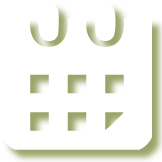

OROR
|| ||
An Experimental unfestival celebrating independent art and technology made here in Portland
From Here?
Come rub shoulders with fellow Portlanders and talk about what matters to us at the intersection of art, design, technology and local civic issues.
In town for XOXO?
OROR is your chance to go off-campus and meet some of the most interesting people and projects in the city you're visiting.
Book your event now!
HOW to book
1 - Go to Calagator and post an event. Tag it “ORORFEST”
2 - Email us
3 - Tweet about it with the hashtag #ORORfest
WHEN to book
Want to make sure XOXO attendees can come to your event? Here’s your guide.
- Wed. 9/18 – Not the festival yet, but XOXO encourages its attendees to arrive early to check out the city.
- Thus & Fri 9/19 & 9/20 – First two days of festival. Festival and conference ticket holders will be free during the day.
- Saturday & Sunday 9/21 & 9/22 – Daytime - conference attendees will be in talks, but festival attendees will be free.
- Monday 9/23 and after – XOXO encourages attendees to stay an extra day, but no guarantees. Portland continues to exisist, long live Portland!
Isn’t that all a little soon?
Sure, but this is Portland, land of DIY and collaboration.
What’s going on?
Here are some highlights. Check Calagator for an up-to-the-minute list of events.
City Scope presents Detour / Derive
Thursday, 9/19
Six participants will present their findings from Detour/Dérive, an urban experiment presented by Project Cityscope, the non-profit organization of Works Partnership Architecture.
Repair Cafe
Thursday, 9/19 6-9PM
Have a broken lamp or a jacket with some holes in it? Come get your items fixed for free at Repair Cafe. Repair PDX volunteers will be fixing bikes, clothes, home appliances, electronics, speakers and sharpening knives and tools! All repairs are free, so come down and bring friends! More info can be found at repairpdx.org
Gimme Shelter!
Friday, 9/20 - Sunday 9/22
A 48 hour Micro-home building competition. Design, source, and build the most comfortable, good looking, easy to build, and sustainable micro-home you possibly can in a single weekend, spending no more than the equivalent of a single month’s rent.
NOTE: Meet at Fernhill Community Center at 7pm September 20 for a planning meeting. Follow the facebook event for more info.
Redesigning Politics for the Post-Internet Era
Friday Sept 20th, 2:30 pm
Getting technical about the “creative” side of campaign finance.
The director of Hack Oregon, sitting on a tower of gin boxes with an easel and series of illustrations, will explain how Super PACs work and the show what happens when you shine transparency to the system. Basically, an evil shadow empire becomes a becomes a powerful tool in the public interest.
Presented by Hack Oregon and New Deal Distillery.
Free drinks with XOXO pass or RSVP.
Synesthesia bike tour
Sunday, 9/22 8PM
Featured in Pedalpalooza last year, follow a local synesthete to the locations of some of his favorite visual phenomena while enjoying snacks chosen to simulate his extra-visual experience. A donation of $3 would be appreciated to cover the snacks. NOTE THAT THE TIME AND LOCATION HAVE CHANGED
Bach : Beethoven : Brahms :: Vivaldi : Mozart : Tchaikovsky
Sunday, 9/22, 6:30 PM
The Brahms Wagner feud is taken to a new level of analysis when scrutinized under synesthesic responses to their musical shapes. Mathmusician Robby Kraft and artist and synesthete Ním Wunnan team up to explore the concepts and relationships behind this analogy. Kraft will abstract musical shapes from representative works and illustrate the way these shapes evolved and changed as they were assimilated by the next generation. Wunnan will describe (and paint) the same structures through the lense of his grapheme > color and visual > audio synesthesia. Together the two interpretations of the musical structures will support a dialogue about the nature of tranlsation and what matters in music and art.
Flux Grand Opening
Friday, 9/27 6PM
Flux’s first public opening will feature an unconference style series of 10 minute talks covering why a feminist hackerspace is necessary in Portland and related topics. Flux — a new hackerspace in Portland — is the work of a small group of artists and hackers.
Research Club Brunch 32
Sunday, 9/29 noon-2pm
Free food, presentations from local innovators, and friendly people.
This Month’s Speakers
Lee LaTour
Lewis and Clark Venture Competition An overview of the competition and Lewis and Clark’s new entrepreneurship program.
Zachary Tobias, Ryan Bubriski and Will Fortini
Portland Mushroom Company The goal of the Portland Mushroom Company is to provide high-quality locally produced oyster mushrooms to the Portland metropolitan area and lead the way in urban mushroom cultivation in the Northwest.
Robert Bart, Howard Voght, Jeffrey Crosswhite, and Thomas Sunderland Forge Portland
The goal of Forge Portland is to provide a shared workspace for nonprofit organizations that helps accelerate progress toward their goals by reducing overhead costs, pooling resources, and creating a vibrant and collaborative atmosphere.
Ripping, Remix & Reel Revolution
Friday, 9/27 & Sunday 9/29
A series of low-cost remix workshops open to the public. Topics include how to search through and download archival footage, DIY filming tips and tricks, and advanced editing for remix videos.
B Media is a community-based video art collective that uses political remix videos, documentary films, and skill-shares to catalyze collaborative work for social justice.
When is this happening?
#ororfest
OROR starts September 18, 2013 and continues until people stop booking.
EVENTS
- Thursday, 9/19 City Scope presents Detour / Derive An urban experiment presented by Project Cityscope.
- Thursday, 9/19 6-9PM Repair Cafe Come get your items fixed for free at Repair Cafe
- Friday, 9/20 - Sunday 9/22 Gimme Shelter! 48 hour Micro-home building competition.
- Friday Sept 20th, 2:30 pm Redesigning Politics for the Post-Internet Era Getting technical about the "creative" side of campaign finance
- Sunday, 9/22 8PM Synesthesia bike tour Follow a local synesthete, get snacks
- Sunday, 9/22, 6:30 PM Bach : Beethoven : Brahms :: Vivaldi : Mozart : Tchaikovsky The Brahms Wagner feud is taken to a new level of analysis
- Friday, 9/27 6PM Flux Grand Opening Flux's first public opening
- Sunday, 9/29 noon-2pm Research Club Brunch 32 Free food, presentations from local innovators, and friendly people.
- Friday, 9/27 & Sunday 9/29 Ripping, Remix & Reel Revolution A series of low-cost remix workshops open to the public.
Who’s running this?
You are.
Do you have a project or a cause you care about? Are you ready to share it with other Portlanders, and the most adventurous of the XOXO crowd?
Create a panel discussion, a series of presentations, a tour or a party. Something simple and direct that will help the XOXO crowd connect with what your community, your project, or your cause are doing.
Here’s how:
Host your event and put it on the calendar.
Have an idea but not a venue? Or have a venue and want to host? Contact us.
OROR was spontaneously generated between organizers of Hack Oregon, Community Supported Everything, and Research Club. We started the snowball – dare you to keep it going!
What’s the big idea?
XOXO brings lots of amazing people to Portland, where, it just so happens, even more amazing people live. OROR is both a chance for visiting doers and thinkers to overlap with residents as well as a way for us Portlanders to get to know each other better.
Support Us!
OROR is about supporting the creative projects that make Portland great. We want to celebrate innovation on the fringe and inspired by the XOXO. Whether it's artists, technologists, craftsmen or otherwise, we understand that often the most exciting innovations arise out of experimentation and diversity.
This is our first year building a conference structure based on radical inclusion. It's made for you, by you.
We are working hard to make this a free festival, but we can't do it without a little help. If you or your business are inspired by what we are doing (and you have a few extra dollars) please consider making a small donation to help us cover basics costs.
Please note that we did not have time to achieve 501c3 non-profit status this year. Your donation won't qualify for a tax deduction, but you can feel pride in knowing that every dollar you give will help reduce the barrier of entry for someone else.